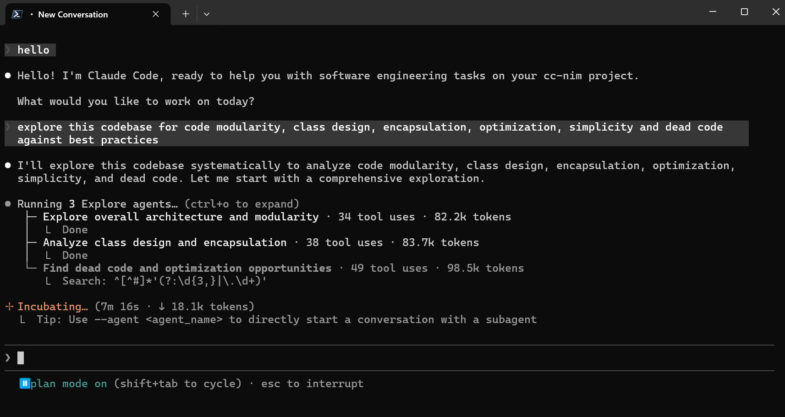

新用户先看什么
保留精益创业视角：适合谁、问题、差异、时机和最小验证。
适合谁
- 已经在用 Claude Code，但想比较本地模型或多 provider 的个人开发者。
- 需要在低风险仓库中验证替代 provider 成本、可用性和工具调用效果的小团队。
解决什么问题
- Claude Code 的默认 provider 可能受成本、配额、区域访问和可用性影响。
- 直接换客户端会破坏工作流；该项目保持 Claude Code 入口不变，只替换后端模型路径。
和别的方案哪里不同
- 核心不是普通 API wrapper，而是 Anthropic Messages / SSE / tool use 兼容层。
- 它需要持续处理 Claude Code 行为、provider schema 和流式响应差异。
为什么现在值得看
- 本地模型和 OpenAI-compatible provider 增多，Claude Code 用户自然会需要可切换后端。
- 项目已沉淀 provider registry、fast-path 处理和测试资产，不只是一次性配置脚本。
最小验证方式
- 本机启动代理，设置
ANTHROPIC_BASE_URL指向本地服务。 - 选一个低风险仓库，验证长任务、工具调用、SSE 流式输出和错误恢复。
Gold Example / Demo
优先使用真实项目图片或仓库 example；未运行时明确标注静态推演。

把 Claude Code 指向本地代理
仓库 README 示例图 + 静态推演
- 启动本地代理服务，例如
localhost:8082。 - 把
ANTHROPIC_BASE_URL指向本地代理。 - 用
MODEL_*把 Claude 模型名映射到 provider/model。 - Claude Code 继续按 Anthropic API 说话，代理负责转发、转换和兜底。
项目机制图
图表是可选组件；只在 UML / 系统动力学等表达方式能带来解释增益时使用。
选择理由：该项目的关键不是 UI，而是一次 Claude Code 请求如何穿过兼容代理，以及兼容覆盖如何带来更多试点反馈。
场景：用户在 Claude Code 中发起一次需要工具调用的 coding 任务。
参考 docs/reference/image.md 的思路：中心是一次任务执行，外圈只保留有解释增益的动力回路。
先看任务执行步骤，再看哪些反馈回路会改变长期采用、风险或上下文存量。
/v1/messages + tools + stream
客户端入口保持不变读取 MODEL_* 映射
决定目标 provider/model构造 provider 请求
处理 schema、tools、thinking发送兼容请求
获得 token/工具调用片段Anthropic-style SSE 返回
客户端继续按原工作流执行provider 覆盖增加 -> 试点成功率提高 -> 用户信任上升 -> 更多仓库试用 -> 暴露更多兼容问题并修复
共享部署扩大 -> 鉴权/日志风险上升 -> 补安全边界 -> 试点范围回到可控状态
主流程图把一次典型任务拆成角色、协议/数据转换和关键交接点。
/v1/messages + tools + stream
客户端入口保持不变读取 MODEL_* 映射
决定目标 provider/model构造 provider 请求
处理 schema、tools、thinking发送兼容请求
获得 token/工具调用片段Anthropic-style SSE 返回
客户端继续按原工作流执行组件图强调核心契约：哪个模块承接输入，哪些模块围绕它提供数据、适配或规则。
接住 Anthropic API 形态请求。
把 Claude 模型名映射到 provider/model。
管理 provider catalog、凭据、base URL 和 factory。
转换 messages、tools、thinking、SSE 和错误形态。
系统动力学图只在反馈、存量或趋势能解释项目机制时使用。
provider 覆盖增加 -> 试点成功率提高 -> 用户信任上升 -> 更多仓库试用 -> 暴露更多兼容问题并修复
共享部署扩大 -> 鉴权/日志风险上升 -> 补安全边界 -> 试点范围回到可控状态
%% 主流程 / sequence
sequenceDiagram
autonumber
participant P1 as Claude Code
participant P2 as Local Proxy
participant P3 as ModelRouter
participant P4 as Provider Adapter
participant P5 as 外部/本地模型
P1->>P2: /v1/messages + tools + stream
Note over P2: 客户端入口保持不变
P2->>P3: 读取 MODEL_* 映射
Note over P3: 决定目标 provider/model
P3->>P4: 构造 provider 请求
Note over P4: 处理 schema、tools、thinking
P4->>P5: 发送兼容请求
Note over P5: 获得 token/工具调用片段
P4->>P1: Anthropic-style SSE 返回
Note over P1: 客户端继续按原工作流执行
---
%% 组件关系 / component
flowchart LR
N1[FastAPI Routes<br/>接住 Anthropic API 形态请求。]
N2[ModelRouter<br/>把 Claude 模型名映射到 provider/model。]
N1 --> N2
N3[Provider Registry<br/>管理 provider catalog、凭据、base URL 和 factory。]
N2 --> N3
N4[Anthropic Core<br/>转换 messages、tools、thinking、SSE 和错误形态。]
N3 --> N4
---
%% 系统动力学 / CLD-SFD-BOT
R 兼容性增强回路: provider 覆盖增加 -> 试点成功率提高 -> 用户信任上升 -> 更多仓库试用 -> 暴露更多兼容问题并修复
B 安全控制回路: 共享部署扩大 -> 鉴权/日志风险上升 -> 补安全边界 -> 试点范围回到可控状态
---
%% 混合图说明
中心使用一次任务/请求执行骨架；外圈只叠加有解释增益的 CLD/SFD/BOT 回路。自适应架构视角
先判断复杂度，再裁剪 C4 / 4+1 / UML 组合；核心业务交互图必须优先。
自适应架构视角
1. 系统全貌
系统边界是 Claude Code 与模型 provider 之间的本地/自托管兼容代理。
上下文图突出系统边界：Claude Code 不变，代理承接路由和 provider 适配。
结构依赖 / 数据流向
结构依赖 / 数据流向
结构依赖 / 数据流向
结构依赖 / 数据流向
结构依赖 / 数据流向
结构依赖 / 数据流向
Mermaid 源码
flowchart LR
Dev[Developer] --> Claude[Claude Code]
Claude --> Proxy[free-claude-code Local Proxy]
Proxy --> Config[MODEL_* / Provider Config]
Proxy --> Providers[External or Local Model Providers]
Providers --> Proxy
Proxy --> Claude2. 核心业务流转
场景描述：Claude Code 发起一次包含 tools 和 stream 的 coding 请求。
重点不是静态模块名，而是 Anthropic 请求如何经过路由、适配和 SSE 回传。
上图由架构视角的 Mermaid sequenceDiagram 源码静态渲染，源码保留在下方。
/v1/messages + tools + stream
read MODEL_* mapping
build provider request
compatible provider call
tokens / tool-call fragments
Anthropic-style SSE
Mermaid 源码
sequenceDiagram
autonumber
participant C as Claude Code
participant P as Local Proxy
participant R as ModelRouter
participant A as Provider Adapter
participant M as External or Local Model
C->>P: /v1/messages + tools + stream
P->>R: read MODEL_* mapping
R->>A: build provider request
A->>M: compatible provider call
M-->>A: tokens / tool-call fragments
A-->>C: Anthropic-style SSE3. 静态组织结构
静态结构只展示真正影响扩 provider 和维护兼容层的容器/模块边界。
静态组织图只保留扩展 provider 和维护兼容层需要看的边界。
结构依赖 / 数据流向
结构依赖 / 数据流向
结构依赖 / 数据流向
结构依赖 / 数据流向
结构依赖 / 数据流向
guard
Mermaid 源码
flowchart LR
Routes[FastAPI Routes] --> Router[ModelRouter]
Router --> Registry[Provider Registry]
Registry --> Adapter[Provider Adapters]
Adapter --> Anthropic[Anthropic Core Conversion]
Anthropic --> SSE[SSE Response]
Tests[Smoke and Provider Tests] -.guard.-> Anthropic核心资产与价值
只保留新用户和技术评估者需要理解的关键资产。
Provider Registry
provider catalog、凭据检查、base URL、factory 和 cache 的统一生命周期。
Anthropic Core
SSE、conversion、thinking、tools、tokens 处理，是兼容 Claude Code 的核心。
Fast-path 识别
quota、title、prefix、suggestion、filepath 小请求可本地响应，降低延迟和消耗。
测试资产
provider、API、SSE、CLI 和 smoke 测试让兼容层更可维护。
采用前确认与证据边界
风险和工程化信息只保留会影响试用/采用决策的部分。
采用前确认
- 先在单机或内网试点，不要直接开放公网。
- 重点验证工具调用质量、长上下文稳定性和 provider 错误恢复。
- 团队共享前补全鉴权、日志脱敏、web_fetch 限制和 provider 兼容矩阵。
DeepWiki / 证据边界
- 未检索到稳定 DeepWiki 首页；本轮以 README、源码结构和本地报告为主。
- README 引用本地
pic.png示例图。 api/routes.py、api/services.py、providers/registry.py、core/anthropic/支撑兼容代理判断。- 未真实启动服务、未调用 provider、未运行 Claude Code。